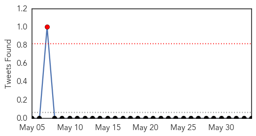
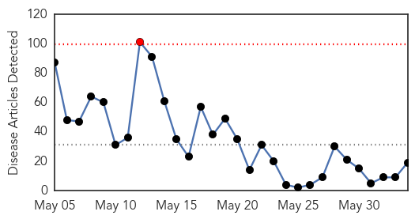
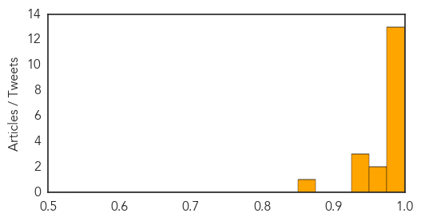

Swine Flu
30-Day Web Trend
2 alerts, 0 warnings
30-Day Twitter Trend
2 alerts, 0 warnings

Article Locations

Article Confidences

Top Articles:
-
No articles found for Jun 03, 2014
Top Tweets:
- 0.518
- Viral transport media to help test swine flu in remote areas: http://t.co/dIebVa8hBJ
MERS
30-Day Web Trend
1 alerts, 0 warnings

30-Day Twitter Trend
1 alerts, 0 warnings

Article Locations

Article Confidences
Top Articles:
- 1.000
- Mers virus: Saudi Arabia raises death toll to 282
- 1.000
- Saudi review finds over 100 more MERS infections
- 1.000
- Saudi review finds 113 more MERS cases - Deputy health minister fired - Kuwait Times
- 0.999
- UAE develops national Mers coronavirus plan
- 0.999
- UAE develops national Mers coronavirus plan
- 0.999
- Saudi Arabia reports big jump in MERS cases, including 282 deaths
- 0.998
- Saudi MERS data review shows big jump in number of deaths
- 0.998
- Saudi MERS data review shows big jump in number of deaths
- 0.998
- DH closely monitors two additional overseas MERS cases reported to WHO
- 0.996
- Mers kills 10 and infects 68 in UAE
- 0.994
- Saudi MERS toll surges to 282
- 0.982
- Saudi Arabia updates MERS numbers, over 100 cases added
- 0.979
- 6 fatalities, 11 infections from MERS-CoV in Jordan
- 0.973
- MERS death toll surges to 282 in Saudi Arabia
- 0.958
- New MERS death reported in Jordan
- 0.946
- Researchers shut down a SARS cloaking system
- 0.940
- Researchers Findings Could Pave the Way to Vaccines for SARS and MERS
- 0.926
- Saudi MERS toll surges to 282: ministry
- 0.861
- OFWs urged: Follow cough etiquette
Top Tweets:
- 0.586
- RT: Excellent special by on MERS-CoV http://t.co/ox1dNPmmbp MERS middleeast coronavirus
- 0.586
- RT: Excellent special by on MERS-CoV http://t.co/ox1dNPmmbp MERS middleeast coronavirus